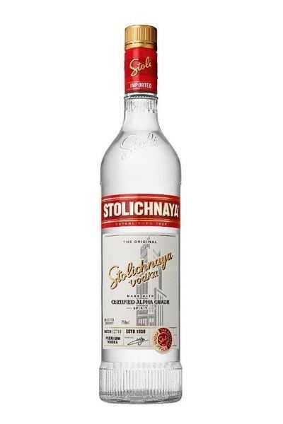
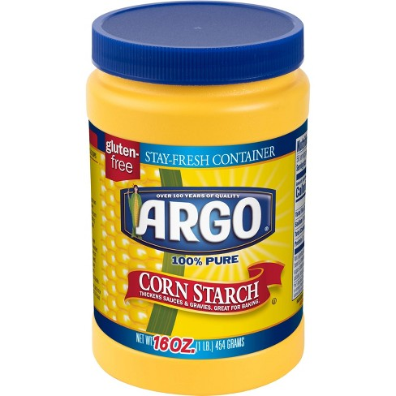
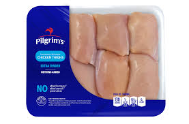
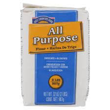
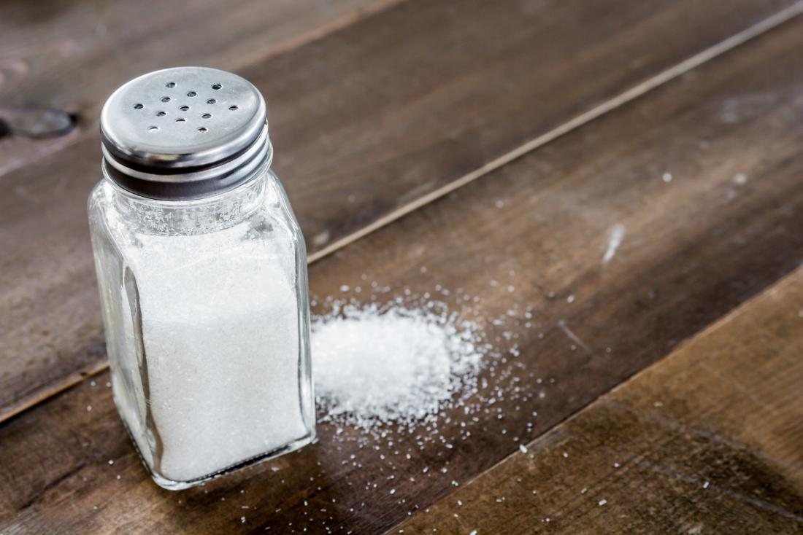
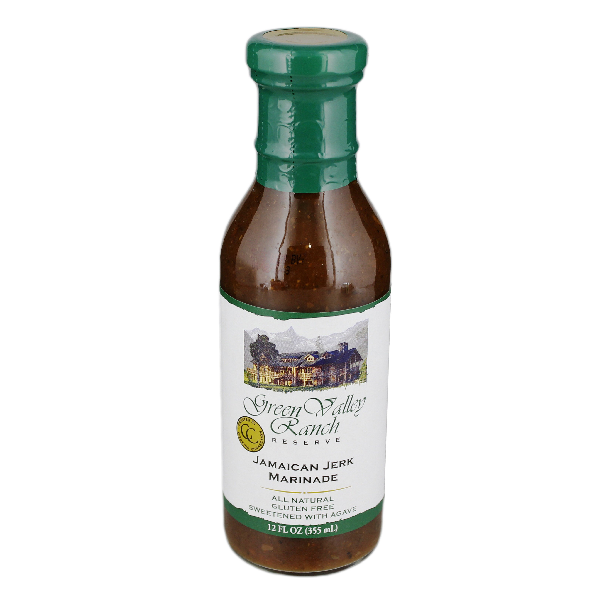
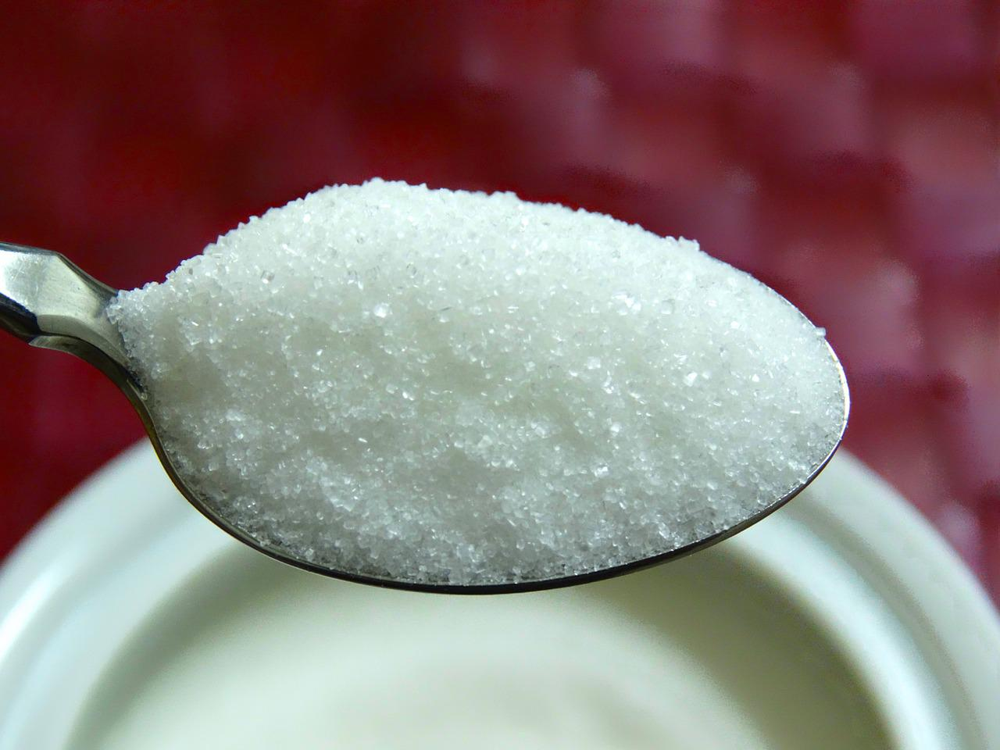
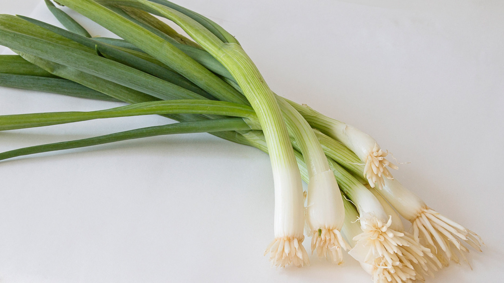
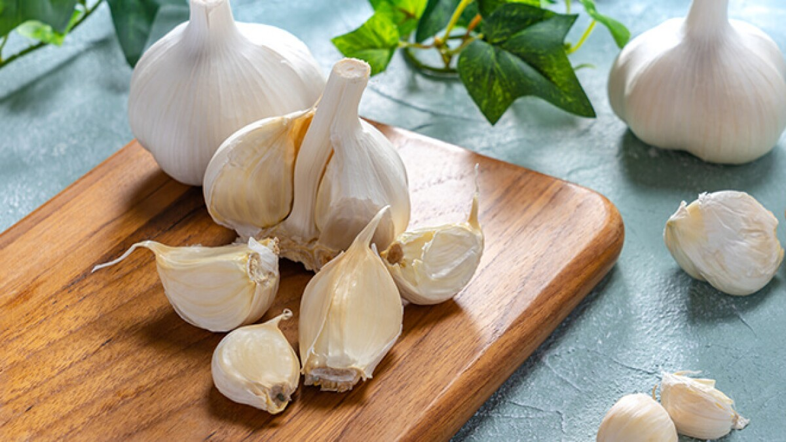

| Ingredient Name: | Amount: | Picture of Ingredient: |
| For the chicken and marinade: | ||
| egg whites | 2 |
|
| dark soy sauce | 3 Tbsp |
|
| Chinese cooking wine | 3 Tbsp |
|
| vodka | 3 Tbsp |  |
| baking soda | 1/4 tsp |
|
| cornstarch | 3 Tbsp |  |
| boneless, skinless chicken thighs | 1 1/2 lbs |  |
| For the breading: | ||
| all purpose flour | 1 cup |  |
| cornstarch | 1 cup | |
| baking powder | 1 tsp |
|
| salt | 1 tsp |  |
| reserved marinade | 3 Tbsp |  |
| For the sauce: | ||
| dark soy sauce | 4 Tbsp |
|
| Chinese cooking wine | 4 Tbsp |
|
| vodka | 3 Tbsp | |
| rice wine vinegar | 3 Tbsp |
|
| chicken stock | 4 Tbsp |
|
| sugar | 1/4 cup |  |
| roasted sesame oil | 1 tsp |
|
| cornstarch | 1 Tbsp | |
| scallions | 6 |  |
| garlic | 4 cloves |  |
| ginger | 2 inch piece |
|
| arbol chiles (optional) | 6-12 |
|